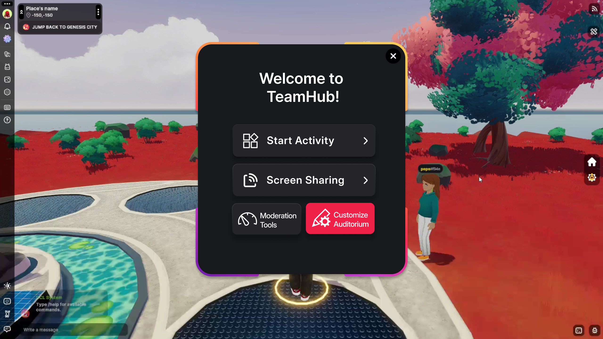
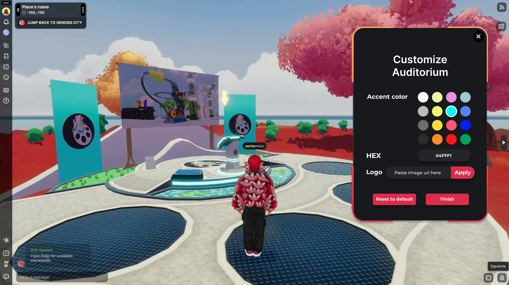
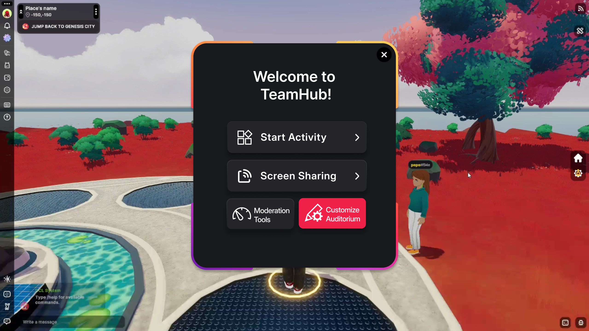
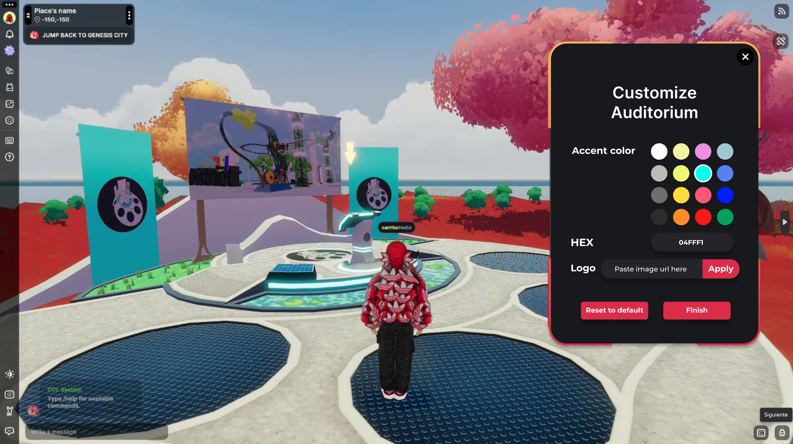

Context
TeamHub is a virtual workspace built inside Decentraland. It enables teams to collaborate, make decisions, and share content through a playful and immersive environment rather than traditional video calls or static tools.
UX / UI · Virtual Platform · Decentraland · 2025
TeamHub is a virtual workspace built inside Decentraland. It enables teams to collaborate, make decisions, and share content through a playful and immersive environment rather than traditional video calls or static tools.
Design a virtual collaboration platform that transforms meetings and decision-making into an engaging, social, and spatial experience through polls, rooms, and interactive content.
Main approach: Concept definition → spatial UX → interaction design → wireframing → UI systems → prototyping inside Decentraland.
Instead of linear screens, TeamHub was designed as a spatial flow where users navigate rooms and interactions inside a virtual world.

.png)
.png)
.png)
.png)
The final design blends minimal UI overlays with immersive 3D spaces, ensuring clarity without breaking presence inside the virtual world.
 



Decentraland enabled ownership, customization, and persistence of virtual spaces—allowing teams to build a digital identity beyond standard collaboration platforms.